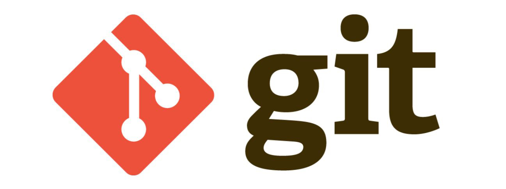

随着互联网时代的来临，代码项目多采用git仓库管理多人协同编码的方式。人非圣贤孰能无过，难免有时自己刚push到远端仓库的代码存在瑕疵需要修改，此时不必惊慌，我们可以利用git的强制覆盖远端仓库来实现撤销提交的目的。适用前提：待撤销的提交记录后暂无他人提交记录。
关键词: git、回退commit
人谁无过？过而能改，善莫大焉
– 左丘明《晋灵公不君》
记录以便查询，回退commit步骤如下。
Step1. 在本地其他路径重新克隆一份代码
接下来的操作均在新克隆的路径执行。
Step2. 切换到要撤销提交的分支
1
| git checkout -b 自定义本地分支名 origin/对应远端分支名
|
查看当前分支
Step3. 获取前一次的提交commit id
默认连续显示最近几次提交记录和对应的commit id，输入q退出。这步操作是为了获取待撤销提交的上一次正常提交的commit id。
Step4. 强制回退到上一次提交节点
强制回退本地仓库代码到远端仓库上一次正常提交到的记录节点【注意：此时所有代码修改均会被删除，这也是为什么第一步选择在其他路径重新克隆代码和执行回退操作】
1
| git reset --hard 【待撤销提交的前一次提交的commit id】
|
Step5. 再次查询分支的提交记录
检验本地此路径仓库的提交记录是否不含待撤销的提交，输入q退出。
Step6. 强制覆盖远端仓库
强制用不含待撤销记录的本地仓库完全覆盖远端仓库。【注意：此操作后远端仓库会与本地仓库完全一致，请确保在待撤销记录之后暂无他人提交代码】
1
| git push origin HEAD --force
|
至此，git撤销已push到远端仓库的提交已完成，接下来跳转到工作仓库pull最新代码完善瑕疵吧！enjoy it :)